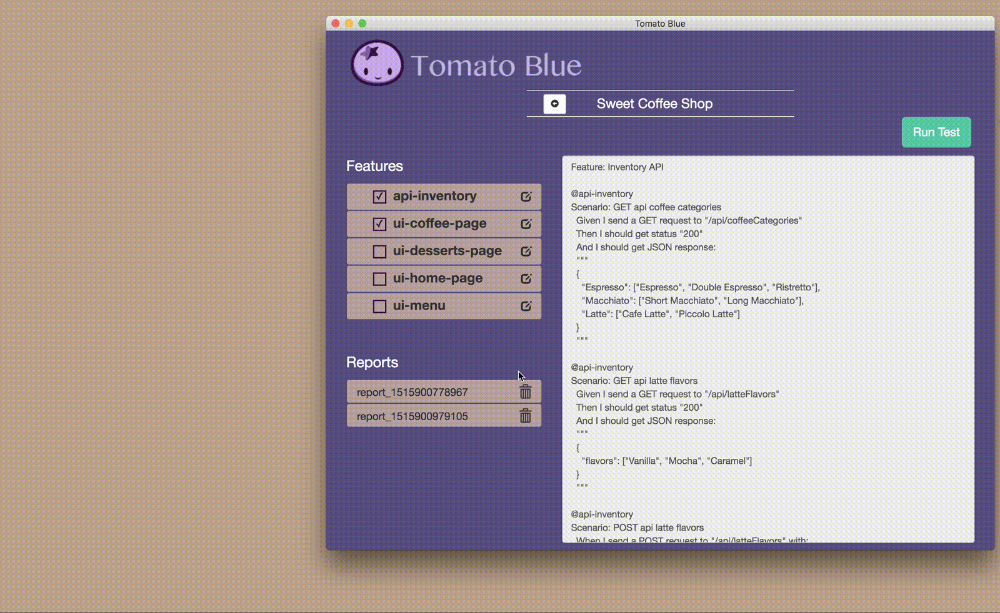

Tomato Blue
Motivation
UI Automation tests are super efficient, it automates the tests that QA used to perform manually, but in most cases, only automation engineers execute the automation test because it's not that easy for people who didn't write the automation test to execute it. The process is like, developers check in the code, ask automation engineer to kick off the automation tests, automation engineer executes the test and lets the developer know if all tests passed. If something failed, the developer has to fix the bug and repeat this process again. Sometimes one automation engineer is shared between 4~5 developers, if the automation engineer is busy at the moment, developers might not able to get feedback immediately.
Tomato Blue is a User Interface for the automation tests. Using Tomato Blue, you don't need to know the coding for the automation tests but still able to select which area you want to test and execute the test. Every time you execute the test, a report is generated. If something failed, you can go back to the reports and figure out when the feature is last tested. With Tomato Blue, developer and manual QA can utilize the automation test easily.
Screenshots:
The test cases are written in Cucumber which can be use as product documentation

I used Capybara to interact with the browser for testing
How does Tomato Blue work
(1) Home page displays all projects, select your project
(2) Select which area you want to test, then click run test
(3) A test report is generated when tests completed, click to view it
(4) Use the edit button to view or edit the codes for the automated tests